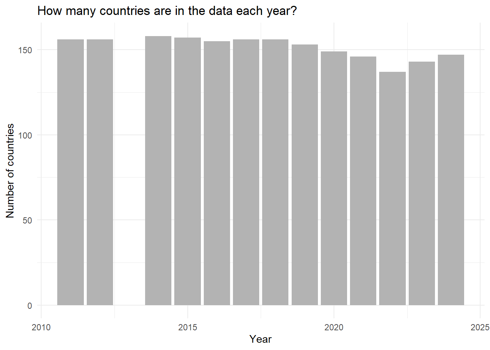
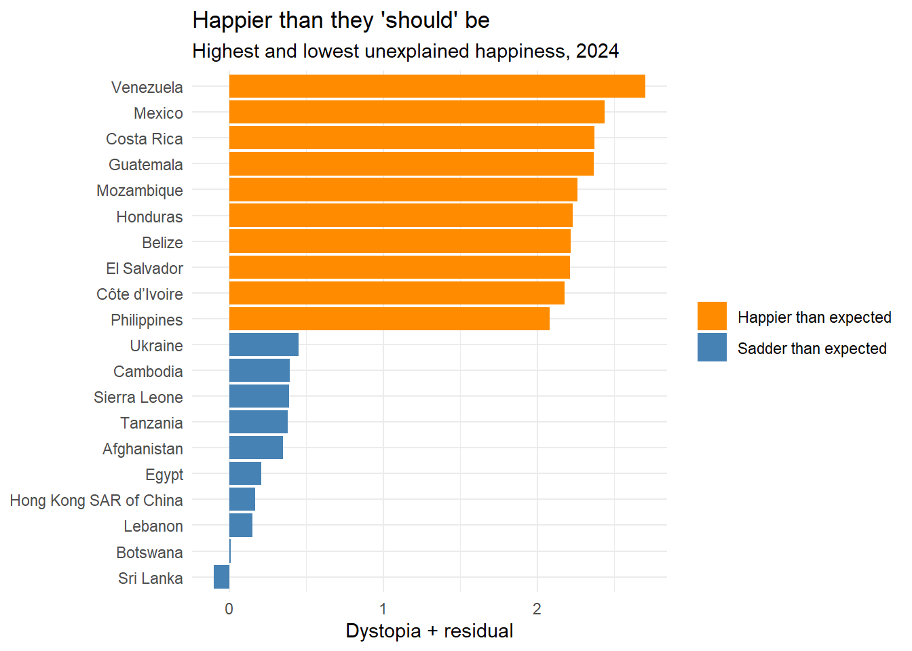
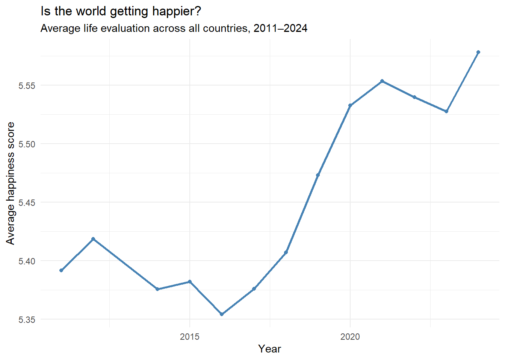

Project Proposal — The Happiness Money Can’t Buy
A look past the headline ranking of the World Happiness Report
1. Project Outline
Every March, headlines announce that Finland is “the happiest country in the world” — again. But what actually sits behind that single number? How much does it move from year to year, and how much of a nation’s happiness can be pinned to money, health and freedom — and how much can’t?
This project uses fourteen years of global survey data (2011–2024) to look past the headline ranking and ask a quieter, more human question: once you subtract everything money can buy, what is left of a country’s happiness — and who has the most of it?
Members
[name] [email]
Slaheddine Azzabi (Azzabi.Slaheddine@campus.lmu.de)
Shohei Kobayashi (kobayashishohei1023@gmail.com)
GitHub Repository
2. Source & Licence
Dataset: World Happiness Report — Figure 2.1 data (country-year panel)
Hosted on: Kaggle — kaggle.com/datasets/unsdsn/world-happiness
Published by: UN Sustainable Development Solutions Network (UNSDSN)
Underlying source: Gallup World Poll — the Cantril ladder life-evaluation question
Coverage: A single harmonised file spanning 2011–2024 (one row per country per year)
Licence: CC0 1.0 — Public Domain (no rights reserved)
Because the data is released under CC0, there is no legal obligation to attribute it. As good academic practice we will still credit it, e.g. “World Happiness Report, UNSDSN, via Kaggle (CC0). Underlying data: Gallup World Poll.”
3. What’s in It
Each row represents one country in one year. The file is already harmonised into a single tidy table — 1,969 rows, 168 countries, 14 years (2011–2024), with the same 13 columns throughout, so no cross-year clean-up is needed before analysis.
Key variables
| Column name | What it measures |
|---|---|
| Year | Survey year, 2011–2024 |
| Rank | Position in that year’s global ranking |
| Country name | The nation — the unit of analysis |
| Life evaluation (3-year average) ★ | Cantril-ladder life evaluation, 0–10 — the TARGET variable |
| Lower / Upper whisker | 95% confidence bounds around the score |
| Explained by: Log GDP per capita | Contribution of income to the score |
| Explained by: Social support | Contribution of having someone to count on |
| Explained by: Healthy life expectancy | Contribution of healthy longevity |
| Explained by: Freedom to make life choices | Contribution of freedom over life choices |
| Explained by: Generosity | Contribution of charitable behaviour |
| Explained by: Perceptions of corruption | Contribution of perceived honesty / low corruption |
| Dystopia + residual | The unexplained remainder — happiness the factors above cannot account for |
★ = target variable.
A subtlety that shapes the whole analysis
The six “Explained by” columns are not raw measurements. Each is the estimated contribution of that factor to the country’s score — not the raw value (it is not GDP in dollars, for example).
They are additive. The six contributions plus the Dystopia + residual sum (up to rounding) to the Life evaluation score — we verified this directly in the data, where the gap averages just 0.0005 points. The bars in the report literally stack to the total.
Why it matters. This means the residual column is not noise to be ignored — it is a finished measurement of the happiness the standard factors fail to explain. That column is the heart of our first question.
4. Research Questions
Q1. Which countries are happier than they “should” be?
Each country’s score already comes broken into the part explained by money, health, freedom, social support, generosity and corruption — and a final leftover, the Dystopia + residual: the happiness those measurable factors cannot account for. A country with a large residual is, in plain terms, happier than the numbers say it has any right to be — the part of well-being that money can’t buy.
Planned output: a bar chart contrasting the 10 highest- and 10 lowest-residual countries in the most recent year — a “punching above their weight” leaderboard.

Claim type: Exploratory.
Goal: To identify the countries whose happiness goes beyond what wealth, health and freedom can explain — and open the question of what else might be holding them up.
Q2. Is the world getting happier over time?
The dataset spans 2011–2024, so we can step back from any single country and ask the simplest question of all: across all these years, is global happiness trending up, down, or holding steady?
Planned output: a line chart of the average happiness score per year.

Claim type: Exploratory.
Goal: To describe the overall trend in global happiness over time and give context for the country-level question above.
5. Context & Target Audience
Context: Journalistic — a data-driven story for an educated general audience curious about global well-being, not a peer-reviewed paper.
Audience: General readers, students and the policy-curious public; no statistical background assumed.
Candidate story angle
“Rich, free — and still restless: what fourteen years of global happiness data reveal about the part of well-being money can’t buy.” The unexplained residual is the hook (Q1); the long-run global trend gives it scale and context (Q2).
Presentation formats (mapped to each question)
• Diverging bar chart — countries ranked by their unexplained happiness, highest and lowest side by side — delivers Q1.
• Line chart — average happiness across all countries, 2011–2024, with key moments annotated — delivers Q2.
• Interactive dashboard (stretch goal) — lets readers filter by year or region and explore the residual on their own — ties the two threads together.
These formats prioritise accessibility and visual storytelling over statistical formalism, which fits a journalistic audience that wants the story behind the numbers.
Proposed Next Step
The data already arrives as one tidy, harmonised panel, so no merging is required. Our first step is exploratory analysis of the Dystopia + residual column for Q1: confirm the additive decomposition, rank countries by residual for the latest year, and check whether the “happier than expected” countries cluster by region — the natural doorway into the rest of the project.